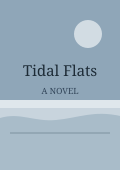
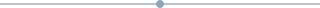
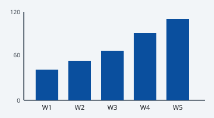

This page MEETS WCAG 1.1.1 Non-text Content.
Riverline Books — this week

Tidal Flats
Our staff pick for this week.


Weekly sales, weeks 1 to 5.
Chart data as a table
Books sold per week
| Week | Books sold |
|---|
| 1 | 40 |
|---|
| 2 | 55 |
|---|
| 3 | 70 |
|---|
| 4 | 95 |
|---|
| 5 | 115 |
|---|